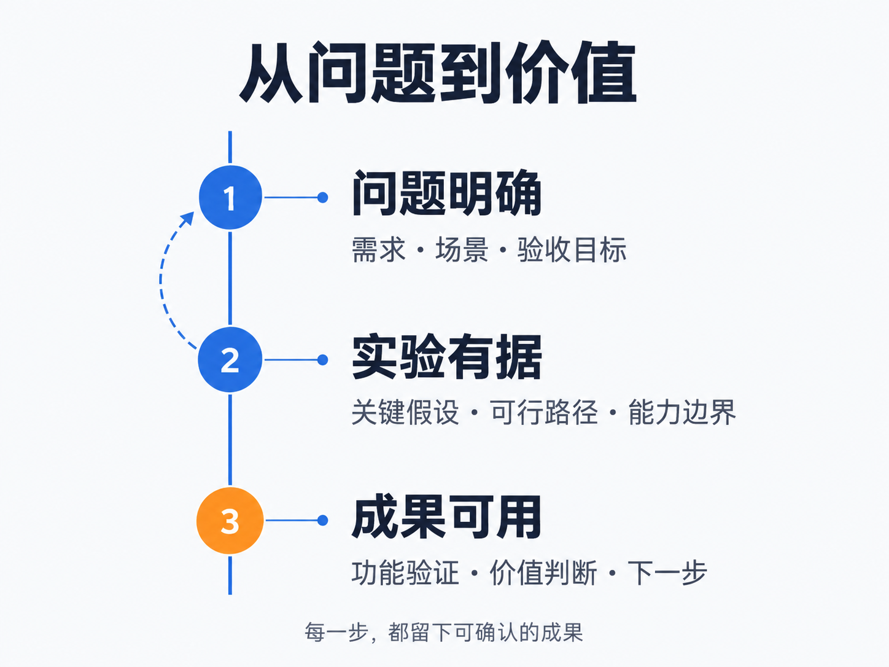

真实问题
某企业法务团队经常面对不同版本的采购合同：条款表述不一致，业务同事希望快速知道哪里需要补充说明。示例将实验聚焦在版本比对、关键条款提取和内部审阅清单，使用脱敏合同和团队已有规则作为材料。目标是帮助审阅者找到需要关注的位置，由法务人员确认解释和修改意见。
让合同问题被发现，也让依据能被核对。
示例案例：展示实验设计与拟交付物，非已实施的真实客户项目。

某企业法务团队经常面对不同版本的采购合同：条款表述不一致，业务同事希望快速知道哪里需要补充说明。示例将实验聚焦在版本比对、关键条款提取和内部审阅清单，使用脱敏合同和团队已有规则作为材料。目标是帮助审阅者找到需要关注的位置，由法务人员确认解释和修改意见。
工作坊先建立业务与法务共同认可的问题清单，再在 2 天 1 夜 Hackathon 中制作带原文定位的审阅 MVP。实验分别测试付款、交付、违约、保密等条款能否被正确提取，旧版与新版变化是否被定位，未知条款是否明确标为待人工判断。每一条提示都要链接到对应合同段落，不用模型猜测缺失的事实。
示例的阶段交付是一套可演示的审阅流程、人工复核表、误报与遗漏记录，以及继续试点的条件。后续可以进入 5 天 BootCamp，将已确认的规则、访问权限与业务系统衔接。是否值得推进，要看团队对同一批样本的复核结果与返工变化；本页没有真实客户背书、已发生的验收结果或法律意见。